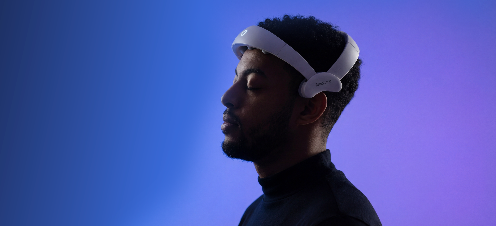
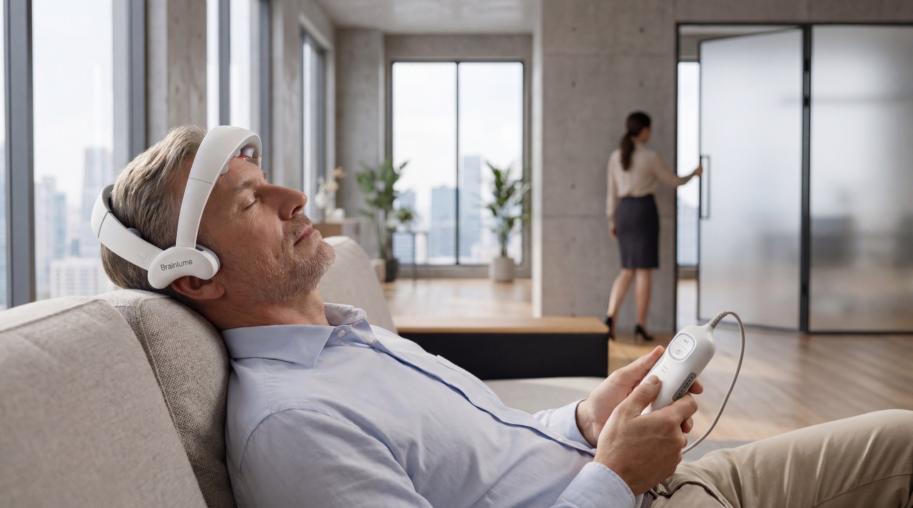

1–7 Sessions
Get familiar
Learn the fit, the controls and your preferred time.

Brainlume PBM Headset
A 20-minute pause. An 810nm near-infrared headset. A little time for yourself.
Shop Brainlume See how it worksNo app. No subscription.
An 810nm near-infrared headset.
Two manual presets. One simple routine.
Brainlume PBM Headset
A head-worn device and handheld controller. Everything within reach.
Six light modules integrated into the headset. Explore the inner structure in detail.
Choose between the 40Hz and 10Hz presets directly on the controller. No app required.
Explore the details. Click an image to enlarge.

01 / Find your fitStep away from the next task. Choose the Day preset on your controller.
Settle somewhere quiet. Adjust the headset for a stable fit.
03 / How it works
Get familiar. Build consistency.
Reflect on what fits your day.
Learn the fit, the controls and your preferred time.
Choose a practical routine and notice your experience.
Review your routine. Follow the product instructions.
Suggested habit-building stages, not a proven treatment or automatic adaptation timeline.
04 / Science & technology
Photobiomodulation explores how light interacts with tissue and cellular processes. That research is the starting point for understanding near-infrared light.
Explore the scienceFrom light-tissue interaction to the study of cellular energy pathways.
810nm LEDs. Six light modules. Two manually selected presets.
Device, dose and study population all matter when interpreting results.
Research context is not clinical proof for this device. The graphic illustrates wavelength, not light penetration or a verified treatment mechanism.
User-selected presets
Two settings. The same simple headset. You choose the mode.
| Feature | Day | Night |
|---|---|---|
| Pulse frequency | 40Hz | 10Hz |
| Routine | Daytime | Evening |
| Session | 20 min | 20 min |
| Wavelength | 810nm | 810nm |
| Mode selection | Manual | Manual |
| App required | No | No |
Preset specifications, not a comparison of clinical outcomes.
05 / Real life
Find a quiet moment once you have arrived. Keep the ritual simple.
Make space before your planned rest, even when your working hours shift.
Use while awake and stationary. These are routine examples, not jet-lag or shift-work treatment claims.
Our story
Brainlume began with a family experience and a commitment to everyday brain wellness.
Meet BrainlumeWearing Brainlume
Customer moments and a closer look at everyday wear.
A 20-minute preset. A moment in your day.
Two presets, selected on the handheld controller.
No app. No subscription. Controls in your hand.
Good to know
Each preset lasts 20 minutes and ends automatically.
No. Select the preset and start on the handheld controller.
No. You manually choose the Day or Night preset.
Use it while awake and remove it after your session.
810nm · Two presets · 20 minutes
Shop BrainlumeSee current pricing and purchase options.
No app. No subscription.
Meet the minds behind Brainlume
We translate light-based brain wellness research into a simple wearable designed for everyday routines.
Meet the full teamPhD | CEO
A founder with a background in CNS development and translational research. She guides Brainlume’s scientific direction and the translation of light-based research into daily wellness.
CNS Research
PhD | CSO
A neuroscientist specializing in translational study design. He leads scientific strategy, research planning and the development of validation pathways for Brainlume.
Neuroscience
PhD | CMO
A pharmacologist and translational scientist. She leads clinical evidence planning, regulatory science strategy and responsible scientific communication.
Regulatory Science
PhD | Advisor
A researcher in brain-computer interfaces and translational neurotechnology. He advises Brainlume on neurotechnology strategy and scientific translation.
Neurotechnology & BCI
Scientific Advisor
An applied neuroscience specialist with expertise in neurofeedback, biofeedback, HRV and qEEG. He advises on brain-state assessment and recovery-oriented wellness routines.
Neurofeedback & qEEG